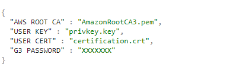
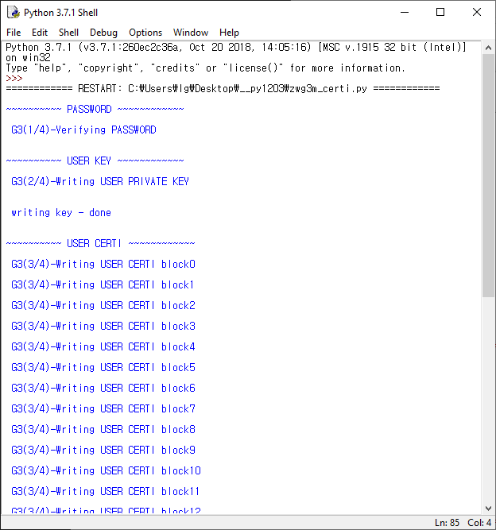

Getting Started with ZWG3M
Provisioning the certificate to G3 device
ZWG3M
includes G3 device, an ICTK’s PUF based-security chip that performs authentication and cryptography operations.
It is suited for performing secure authentication, protecting firmware , preventing counterfeiting and storing secure data.
This guide will provide writing certificates and keys to G3 via ZWG3M board so that the customer can write their personal certificate to connect AWS IoT.
Certificate Requirements
Cryptographic algorithm: ECC(ECDSA and ECDH) with secp256r1(NIST P256)
ECC curve name : prime256v1
Private key file extension : *.key
Certificate file extension : *.crt
Please have the ECC certificates ready for provisioning. Use this link openssl guide to create one if needed.
Write your certificate to ZWG3M:
G3 password will be set differently with client’s request. Unless defined, it is set to default value : 11223344 . Please contact puf@ictk.com for detail information.
Please locate your certification files in zwg3m-py folder.
• A client certificate (*.crt)
• A client private key ( *.key)
G3 supports ECC but not RSA . please use ECC 256 bit key for Amazon Trust Services Endpoints.
• RootCA : AmazonRootCA certificate
Please modify the
certi.json file accordingly.
AWS ROOT CA : amazon root
certificate
USER KEY : your own private key
USER CERT : your
certificate
G3 PASSWORD : password provided from vendor
certi.json

Run script : zwg3m_certi.py
Available port will be shown in windows. Once user selects the port for the ZWG3M, it will be stored in json file name 'zwg3m.json'
Writing process
*please disable Wi-Fi connection prior to below process. Any interruption may cause false input to G3 device.

Writing process may take up to minutes and will be shown as above. Please reset the ZWG3M board after the process.